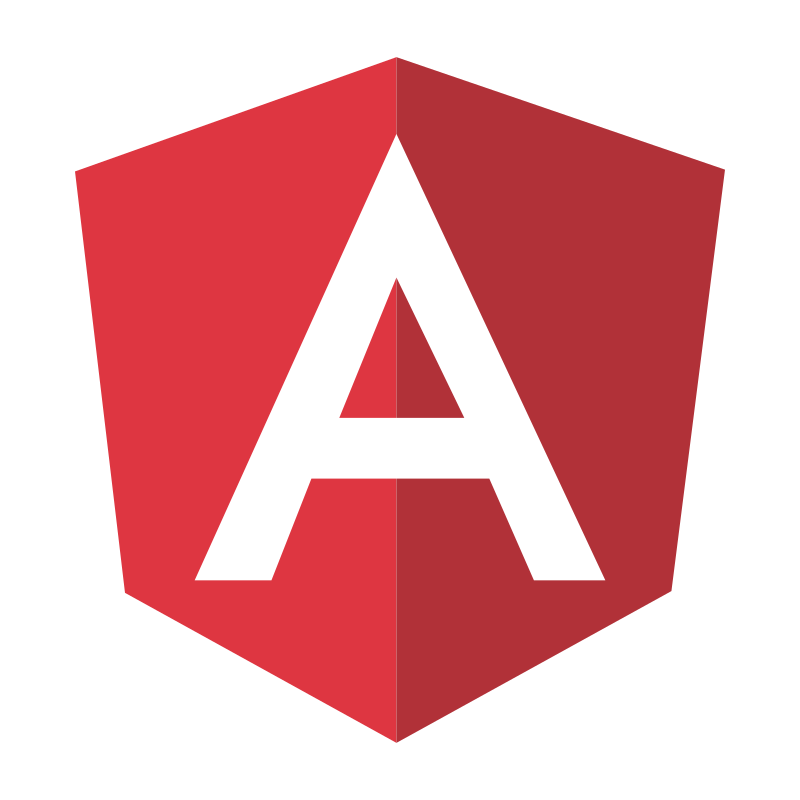

Sobre
Sou desenvolvedor de software com experiência na construção de aplicações web completas, atuando desde a concepção até a entrega e monitoramento em produção. Trabalho principalmente com Java e Spring Boot no backend e Angular, TypeScript e JavaScript no frontend, aplicando boas práticas de arquitetura, modularização e programação reativa. Tenho vivência com modelagem de dados em Oracle e PostgreSQL, além de experiência com mensageria para comunicação assíncrona e construção de soluções escaláveis. Também atuo com testes automatizados, garantindo qualidade e confiabilidade das entregas. Possuo experiência na implementação de pipelines CI/CD com Jenkins e Docker, bem como no uso de monitoramento e observabilidade com Grafana, contribuindo para a estabilidade e evolução contínua das aplicações. Trabalho em ambientes ágeis, com foco em qualidade de código, boas práticas de engenharia de software e entrega contínua de valor. Neste portfólio, apresento projetos que refletem minha experiência prática e minha evolução técnica na construção de soluções eficientes e escaláveis.
Evolução de Observabilidade em Aplicações Web
Contexto: Aplicação corporativa com múltiplos serviços e necessidade de maior visibilidade em produção. Problema: Dificuldade na identificação rápida de falhas e análise de comportamento do sistema. Solução: Implementação de monitoramento com Grafana, criação de métricas customizadas e acompanhamento de indicadores de saúde da aplicação. Resultado: Redução no tempo de diagnóstico de incidentes e melhoria na estabilidade geral do sistema.
Implementação de Comunicação Assíncrona entre Serviços
Contexto: Sistema com necessidade de integração entre diferentes módulos e serviços. Problema: Acoplamento elevado e limitações de escalabilidade na comunicação síncrona. Solução: Introdução de mensageria com Artemis MQ para comunicação assíncrona entre serviços. Resultado: Redução do acoplamento, melhoria na escalabilidade e maior resiliência da aplicação.
Melhoria de Qualidade com Testes Automatizados
Contexto: Necessidade de aumentar a confiabilidade das entregas e reduzir regressões. Problema: Baixa cobertura de testes e maior incidência de erros em produção. Solução: Implementação de testes unitários e de integração com JUnit, Karma e Jasmine. Resultado: Aumento da qualidade do código, maior segurança em mudanças e redução de falhas em produção.


.svg)